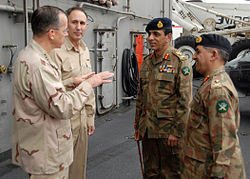

TheStructure of the Pakistan Armycan be broken down two ways,administrative ,and
operational.Operationally the Pakistan Army is divided in 9 Corps and two Corps level
formations(commands)having areas of responsibility (AOR) from mountainous region of northern
Pakistan to the desert and coastal region of the south.Administratively it is divide in different
regiments (details below). The General Headquarters (GHQ) of Pakistan Army is
located in the garrison city of Rawalpindi in Punjab province.It is
planned to be moved to the capital city of Islamabad.
The Chief of the Army Staff (COAS), formely called the Commander in Chief (C in C),
is challanged with the responsibility of commanding the Pakistan Army.The COAS operates from army
headquarters in Rawalpindi, near Islamabad.The Principal Staff
Officers (PSO`s) assisting him in his duties at the Lieutenant General level
include:
The Military Operations and Intelligence Directorates function under the Chief of General
Staff (CGS) . A major reorganization in GHQ was done in September 2008 under General Ashfaq Parvez Kayani, when two new PSO positions were introduced: the Inspector
General Arms and the Inspector General Communications and IT, thus raising the number of PSO's to
eight.[1]
The headquarters function also includes the Judge Advocate General (JAG), and the Comptroller of
Civilian Personnel, the Chief of the Corps of Engineers (E-in-C) who is also head of Military Engineering Service (MES),Military Engineering Service (MES), all of them
also report to the Chief of the Army Staff.
Corps:
A Corps in the Pakistani Army usually consists of two or more Divisions and is commanded by a Lieutenant General (equivalent to Federal Secretary).
Currently, the Pakistani Army has 9 Corps and two corps-level formations. The Army Strategic
Force Command (ASFC), responsible for bearing the national strategic and nuclear assets was
initially a Division equivalent formation, but later raised to the status of a Corps.
Division:
Each division is commanded by a Major General (equivalent to BPS-21 grade), and
usually holds three Brigades including infantry, artillery, engineers and communications units
in addition to logistics (supply and service) support to sustain independent action. Except for
the Divisions operating in the mountains, all the Divisions have at least one armoured unit,
some have even more depending upon their functionality. The most major of all ground force
combat formations is the infantry division. Such a division would primarily hold three infantry
brigades. There are 19 Infantry Divisions, 1 Special Operations Elite Combat Para Infantry
Division (initially a brigade-sized group but recently (January 2003) raised to a Division size
group), two Mechanized Infantry divisions, two Armoured Divisions, 1 Engineers Division, 2
Artillery Divisions (which are widely believed to be in possession of Ballistics Nuclear
Missiles - Therefore these Artillery Divisions are equivalent of Modern Ballistics Missile
Artillery Division instead of traditional Artillery role usually associated with them) in the
Pakistani Army.
Brigade:
A Brigade is under the command of a Brigadier (equivalent to BPS-20 grade) and
comprises three or more Battalions of different units depending on its functionality. An
independent brigade would be one that primarily consists of an artillery unit, an infantry unit,
an armour unit and logistics to support its actions. Such a brigade is not part of any division
and is under direct command of a corps.
Battalion:
Each battalion is commanded by a Lieutenant Colonel and has roughly 600 to 900
soldiers under his command. This number varies depending on the functionality of the battalion.
A battalion comprises either three batteries (in case of artillery and air defence regiments -
generally named Papa, Quebec, Romeo, and Headquarters Battery) or four companies (in case of
infantry regiments - generally named Alpha, Bravo, Charlie, and Delta - and other arms excluding
armored units that are organized into squadrons) each under the command of a major and
consisting of individual subunits called sections (which are further divisible into platoons and
squads).[2]
There are seven Independent Mechanized Infantry Brigades, eight Independent Armoured
brigades, 4 Artillery Brigades, and nine Engineer brigades.
These include 105 Air Defence Independent Brigade Group in XXXI Corps, 111 Independent Infantry
Brigade at Rawalpindi with X Corps, 212 Infantry Brigade at Lahore
with IV Corps and 105 Independent Infantry Brigade under V Corps. Nine independent signal brigade
groups are also present (one in each corps).
Eastern Command was a Corps level formation in the former East
Pakistan consisting of 14th, 9th and 16th Infantry Divisions. All three were re-raised after
the war and exist today.
36 ID and 39 ID were raised to command the Paramilitary troops and a few loyal battalions. Were later
reinforced with a couple of other battalions each. They were not re-raised after the war.
The Pakistani Army is divided into two main branches, which are Arms and Services.
Infantry, Armour, Artillery and Army Air Defence [edit]
The Army's infantry force includes two Special forces Brigades with 5 Battalions, The Pakistan Armoured Corps includes eight Armoured Reconnaissance regiments, while the
Air Defence also includes three Strategic Defence and 12 Self Propelled (SP) Regiments
35th Cavalry (AL-MUBARIZUN)(Raised 1 November 2014.)
36th Cavalry
37th Cavalry (Ribat-us-Sehra)
38th Cavalry (Desert Hawks)
39th Cavalry (the Vanguards)
40th Horse (Scinde Horse)
41st Horse (Frontier Force)
42nd Lancers (Punjab Lancers)
43rd Cavalry (al-Zarib)
44th Cavalry (Pioneers)
51st Lancers (Silver Eagles)
52nd Cavalry (Howal mastan)
53rd Cavalry (Golden Eagles)
54th Cavalry (Hizbullah)
55th Cavalry
56th Cavalry (Raad-ul-Harb)
57th Lancers
58th Cavalry
Mortar Artillery Regiment (Disbanded and amalgamated with Inf.
Regiments. Few remnants of Heavy Mortar (i.e. 88 Mtr Arty Bn) remained until 2005–6
when they were too made part of Inf. Regiments)
Mujahid Artillery Regiment (These are Field Artillery Units but
under Command of General Headquarters (GHQ) National Guard (NG) Branch Mujahid
Regiments i.e. their equipment is usually not at par to Regular Army Artillery Field
Units)
* The President's Bodyguard formed at independence from members of the Governor General's
Bodyguard, itself successor to the Governor's Troop of Moghals raised in 1773
* 5th Horse is the successor to the 1st Sikh Irregular Cavalry (Wales's Horse), and the 2nd Sikh
Irregular Cavalry, both raised in 1857
* 6th Lancers is the successor to The Rohilkhand Horse raised in 1857, and the 4th Sikh Irregular
Cavalry raised in 1858
* Guides Cavalry (Frontier Force) is the successor to the Corps of Guides raised in 1846
* 11th Cavalry (Frontier Force) is the successor to 1st Regiment of Punjab Cavalry and 3rd Regiment
of Punjab Cavalry, both raised in 1849
* 13th Lancers is the successor to the 1st Native Troop raised in 1804, and the 2nd Native Troop
raised in 1816. It is also the senior most armour regiment of the Indian Sub-Continent.
* 19th Lancers is the successor to the 2nd Mahratta Horse (Tiwana Horse) raised in 1858, and Fane's
Horse raised in 1860
* 25th Cavalry (Frontier Force) is the famous unit which stopped Indian armour thrust in Chawinda in
1965
* The Northern Light Infantry was formed in 1977 from various paramilitary units of scouts, became
part of the army in 1999 after the Kargil War
* The Special Service Group was formed in 1959 around a cadre from the Baloch Regiment

From left, Chairman of the Joint Chiefs of Staff Navy Adm. Mike Mullen and Rear Adm.
Scott Van Buskirk, commander of Carrier Strike Group 9, speak with Chief of Army Staff of the
Pakistan Army Gen. Ashfaq Kayani and Pakistani Maj. Gen. Ahmad Shuja Pasha, director general of
military operations, on the flight deck of the aircraft carrier USS Abraham Lincoln (CVN 72)
while under way in the North Arabian Sea Aug. 27, 2008.